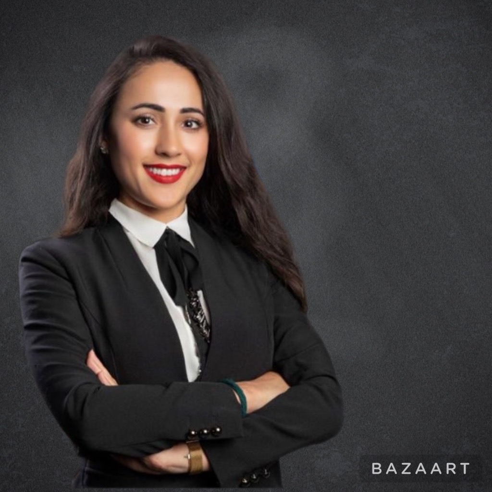

Elena Dobrova
Contact information
- Location: Cyprus
- Phone: +905338721389
- Email: elenadfrontend@gmail.com
- GitHub: elenadobrova
About Me
I am working in a Merit Poker company, like a system administrator.
I have excellent communication, organization and problem solving skills.
My experience in management, public relations, personal training, tourism and etc more than 10 years.
I like to learn something new, thats why now I am focused on developing.
Skills
- HTML
- CSS
- Git
- Communication Skills
- Organization Skills
- Problem Solving Skills
- Personal Training Skills
- Interpersonal Skills
- Team Work
Code Example
Education
- University:
- IMI-NOVA - International Management Institute
- Marketing and Logistic - Bachelor
- Public Relation - Master
- Courses:
- HTML/CSS (CanSheCode)
- JavaScript (in process...) (CanSheCode)
- CS50
Experience
- 2015-2020 - Front Office Supervisor / Merit Hotel
- 2020-2021 - SMM Scepialist / Freelance
- 2021 - System Administrator / Merit Poker
Langueges
- Russian - native speaker
- Turkish - C1
- English - B1
- Romanian - A1